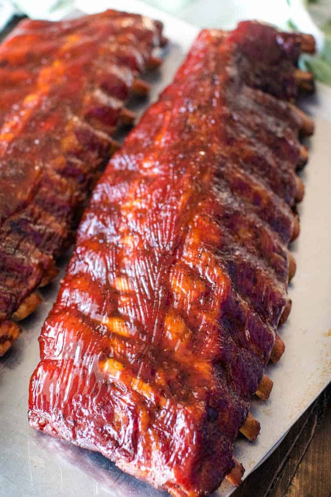

BBQ Smoked Ribs

Description
This recipe for smoked ribs is a foolproof way to acheive delecatble, tender ribs loaded with smoky barbecue flavor.
Simple in concept, this method makes use of cooking the ribs at a low temperature over a long period of time.
The method can accomodate any spice rub or BBQ sauce, so feel free to experiment with different flavors. The true secret is in the method,
and the result is flavorful, fall off the bone ribs that will be a hit at any BBQ!
Ingredients
- 2 racks pork ribs
- 1-3 cups smoking wood chips (hickory, pecan, or cherry preferred)
- 1 cup apple juice in spray bottle
Spice Rub
- 3 tbsp chili powder
- 1 tbsp garlic powder
- 1 tbsp onion powder
- 1 tbsp paprika
- 2 tbsp ground mustard
- 1 tbsp dried oregano
- 1 tbsp kosher salt
- 1 tbsp black pepper
- 1 tbsp white pepper
- 1 tbsp cumin
- 1 tsp cayenne pepper
BBQ Sauce
- 2 cups apple cider vinegar
- 2 cups tomato puree
- 1/4 cup dark brown sugar
- 1/2 tsp paprika
- 1 tsp garlic powder
- 1 tsp onion powder
- 1 tsp salt
- 2 tsp ground mustard
- 2 tsp Worchestershire sauce
- 1/2 cup smoky bourbon